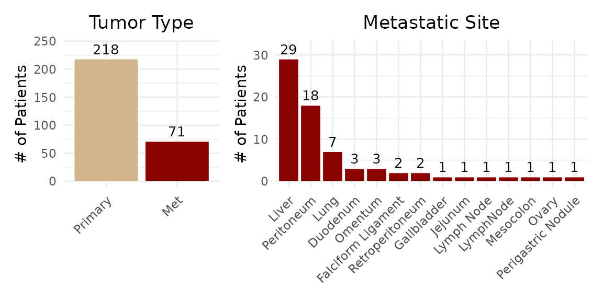
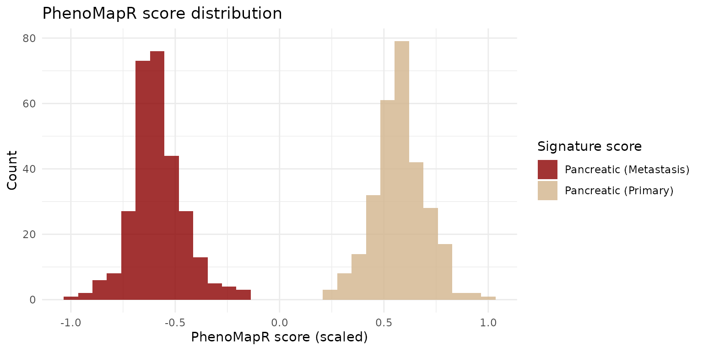
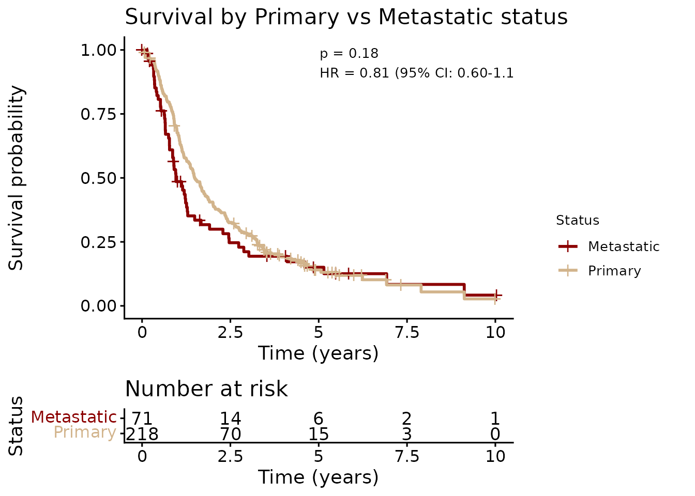
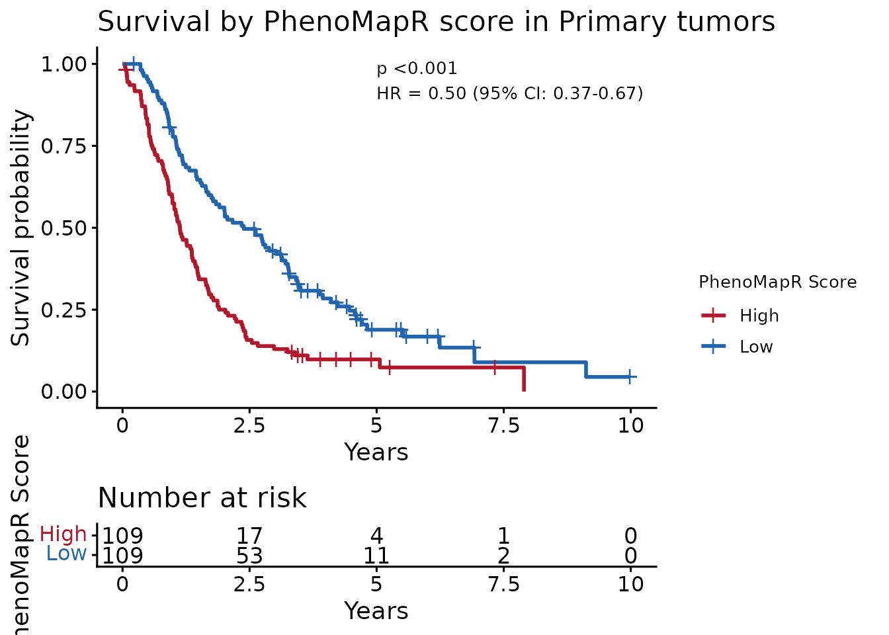
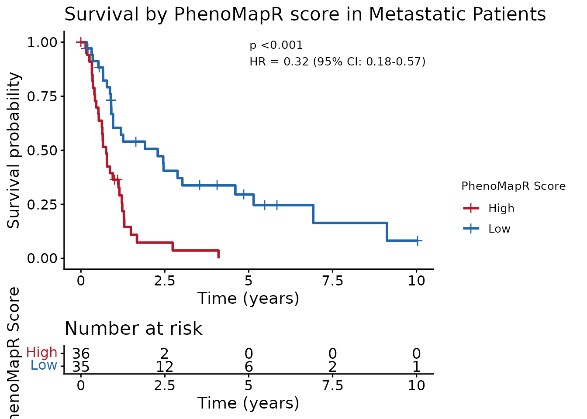

Scoring bulk gene expression samples with PhenoMapR
Source:vignettes/bulk-survival.Rmd
bulk-survival.RmdOverview
This vignette shows how to apply PhenoMapR to score bulk
RNA-seq samples using the built-in pan-cancer outcomes meta-z
score signatures from PRECOG
[1]. We use the GSE205154
dataset: 289 primary and metastatic pancreatic ductal
adenocarcinoma (PAAD) samples with gene expression and overall
survival (Link et al.) [2]. After scoring samples
with PhenoMapR’s built-in PRECOG
references, we stratify by PhenoMapR score
and demonstrate that this separates survival in both primary and
metastatic groups.
Data used for vignette:
-
GSE205154_GPL20301_expression.rds— normalized expression (genes × samples) -
GSE205154_info.rds— sample annotations (Tumor_Type: Primary / Met, OS_Time, OS_Status, Specimen_Site when available)
1. Load bulk expression and clinical annotations for GSE205154
We use GSE205154 because it’s a fairly large PAAD
dataset that also includes metastatic samples, which we can score
separately using the Primary and Metastatic meta-z scores from
PRECOG.
suppressPackageStartupMessages(library(PhenoMapR))
suppressPackageStartupMessages(library(patchwork))
suppressPackageStartupMessages(library(ggplot2))
# Vignette data, downloaded from Google Drive.
googledrive::drive_deauth()
options(googledrive_quiet = TRUE)
# Patient annotations
googledrive::drive_download(googledrive::as_id("1c0GUMVzAr6K44Z7CfVRz-dy6jIvb0nNo"), "GSE205154_info.rds", overwrite = TRUE)
pheno <- readRDS("GSE205154_info.rds")
# Expression matrix
googledrive::drive_download(googledrive::as_id("16P-rfXD734seGl_xxTQuSDGMStQk9G7B"), "GSE205154_GPL20301_expression.rds", overwrite = TRUE)
bulk_mat <- readRDS("GSE205154_GPL20301_expression.rds")
message("Expression: ", nrow(bulk_mat), " genes × ", ncol(bulk_mat), " samples")
message("Phenotype: ", nrow(pheno), " samples (Primary: ", sum(pheno$tumor_type == "Primary"), ", Met: ", sum(pheno$tumor_type == "Met"), ")")
p_type <- ggplot(pheno, aes(x = reorder(Tumor_Type, Tumor_Type, function(x) -length(x)),
fill = Tumor_Type)) + # Add fill mapping
geom_bar(color = "white", linewidth = 0.2) +
scale_fill_manual(values = c("Primary" = "tan", "Met" = "darkred")) + # Set colors
geom_text(stat = 'count', aes(label = after_stat(count)),
vjust = -0.5, size = 3.5, color = "black") +
theme_minimal() +
theme(plot.title = element_text(hjust = 0.5),
axis.text.x = element_text(angle = 45, hjust = 1),
legend.position = "none") + # Hide legend since it's obvious from x-axis
labs(x = NULL, y = "# of Patients", title = "Tumor Type") +
ylim(0, max(table(pheno$Tumor_Type)) * 1.1)
p_site <- ggplot(subset(pheno, Tumor_Type == "Met"), aes(x = reorder(Specimen_Site, Specimen_Site, function(x) -length(x)))) +
geom_bar(fill = "darkred", color = "white", linewidth = 0.2) +
geom_text(stat = 'count', aes(label = after_stat(count)), vjust = -0.5, size = 3.5, color = "black") +
theme_minimal() +
theme(plot.title = element_text(hjust = 0.5),
axis.text.x = element_text(angle = 45, hjust = 1)) +
labs(x = NULL, y = "# of Patients", title = "Metastatic Site") +
ylim(0, max(table(pheno$Specimen_Site[pheno$Tumor_Type == "Met"])) * 1.1)
# plot both side-by-side
print(p_type + p_site + patchwork::plot_layout(widths = c(1, 2)))
2. Score bulk samples with PhenoMapR
Here, we score all samples with
PhenoMapR using the built-in Adult PRECOG
meta-z score signatures for primary and metastatic PAAD. By assigning a
prognostic risk score to the samples, we should be able to identify
patients expressing more adversely prognostic signatures as well as more
favorably prognostic signatures and this should stratify outcomes.
# To assign a PhenoMap score to each sample, pass the bulk gene expression matrix
# to the expression argument, select the reference database to score against (can
# be one of: precog, tcga, pediatric_precog, or ici_precog, and specify the cancer
# type to score against (use list_cancer_types(reference = "precog") to see available
# cancer types)
# Score all samples using the Primary PAAD signature
scores_primary <- PhenoMap(
expression = bulk_mat,
reference = "precog",
cancer_type = "Pancreatic",
verbose = TRUE
)## 7376 genes used for scoring against Pancreatic
## Calculating scores...
## Completed scoring for Pancreatic
# Score all samples using the Metastatic PAAD signature
scores_met <- PhenoMap(
expression = bulk_mat,
reference = "precog",
cancer_type = "Pancreatic_Metastasis",
verbose = TRUE
)## 2997 genes used for scoring against Pancreatic_Metastasis
## Calculating scores...
## Completed scoring for Pancreatic_Metastasis
# make a combined dataframe of sample clinical annotations and PhenoMap scores
col_pan <- grep("Pancreatic$", colnames(scores_primary), value = TRUE)[1]
col_met <- grep("Pancreatic_Metastasis", colnames(scores_met), value = TRUE)[1]
scores_df <- data.frame(
sample_id = rownames(scores_primary),
score_Pancreatic = if (!is.na(col_pan)) scores_primary[[col_pan]] else NA_real_,
score_Pancreatic_Metastasis = if (!is.na(col_met)) scores_met[[col_met]] else NA_real_,
stringsAsFactors = FALSE
)
dat <- merge(pheno, scores_df, by = "sample_id")
# Summary histogram: Primary and Metastatic PhenoMapR scores (scaled)
score_long <- data.frame(
score = c(dat$score_Pancreatic, dat$score_Pancreatic_Metastasis),
type = rep(c("Pancreatic (Primary)", "Pancreatic (Metastasis)"), each = nrow(dat))
)
scale_preserve_sign <- function(x) {
# Scale negative values: -1 to 0
neg_idx <- x < 0
if (any(neg_idx)) {
x[neg_idx] <- x[neg_idx] / abs(min(x, na.rm = TRUE))
}
# Scale positive values: 0 to 1
pos_idx <- x > 0
if (any(pos_idx)) {
x[pos_idx] <- x[pos_idx] / max(x, na.rm = TRUE)
}
return(x)
}
score_long$score_scale = scale_preserve_sign(score_long$score)
ggplot(score_long, aes(x = score_scale, fill = type)) +
geom_histogram(alpha = 0.8, position = "identity", bins = 30) +
scale_fill_manual(values = c("Pancreatic (Primary)" = "tan", "Pancreatic (Metastasis)" = "darkred")) +
labs(x = "PhenoMapR score (scaled)", y = "Count", fill = "Signature score", title = "PhenoMapR score distribution") +
theme_minimal()
Interestingly, it appears that the metastatic PAAD patients are scoring with a more favorablePhenoMapR score
based on the metastatic PAAD signature used. The primary PAAD patients
are all scoring more adversely prognostic based on the primary PAAD
PRECOG signature. This suggests that the metastatic patient population
in this dataset might be less adversely prognostic than the average
metastatic PAAD population.
3. Primary vs Metastatic outcomes
Before seeing if PhenoMapR scores stratify outcomes, let’s see if the
primary and metastatic patients in the study show differences in
outcomes. Based on the PhenoMapR score
distributions above, the metastatic population might be less adversely
prognostic than normal.
suppressPackageStartupMessages(library(survival))
suppressPackageStartupMessages(library(survminer))
# Unnamed vector: order matches strata (Met first, then Primary). Named palettes trigger scale warnings.
pal_tumor <- c("darkred", "tan") # Metastatic, Primary
fit_primary <- survfit(Surv(survival_time, survival_event) ~ tumor_type, data = dat)
lr_primary <- survdiff(Surv(survival_time, survival_event) ~ tumor_type, data = dat)
pval_primary <- 1 - pchisq(lr_primary$chisq, 1)
cox_primary <- coxph(Surv(survival_time, survival_event) ~ tumor_type, data = dat)
hr_primary <- exp(coef(cox_primary))[1]
ci_primary <- as.vector(exp(confint(cox_primary)))
label_primary <- sprintf("p = %s\nHR = %.2f (95%% CI: %.2f-%.2f)",
format.pval(pval_primary, digits = 2, eps = 0.001), hr_primary, ci_primary[1], ci_primary[2])
max_time_primary <- max(dat$survival_time, na.rm = TRUE)
suppressWarnings(ggsurvplot(
fit_primary,
data = dat,
palette = pal_tumor,
risk.table = TRUE,
title = "Survival by Primary vs Metastatic status",
xlab = "Time (years)",
ylab = "Survival probability",
legend = "right", # Just position
legend.labs = c("Metastatic", "Primary"),
legend.title = "Status", # This actually works in newer versions
pval = label_primary,
pval.coord = c(max_time_primary * 0.5, 0.95),
pval.size = 3.5
))
It seems like patients with metastatic disease trend towards worse
outcomes but it’s not statistically significant, in line with the
results of the PhenoMapR score
distributions in Section 2.
4. Primary tumors: PhenoMapR stratifies outcome
The weighted-sum scoring approach of
PhenoMapR scores patients based on their
overall expression signature skew towards more adversely or favorably
prognostic signatures. This should theoretically be able to stratify
patients in survival analysis. Here, we stratify primary samples by
PhenoMapR score (high vs low median split) and show that the
PhenoMapR score stratifies survival.
# Unnamed vector: order matches strata (High first, then Low). Named palettes can trigger scale warnings.
pal_km <- c("#B2182B", "#2166AC") # High (adverse), Low (favorable)
dat_primary <- dat[dat$tumor_type == "Primary", ]
dat_primary$score_grp <- ifelse(
dat_primary$score_Pancreatic >= median(dat_primary$score_Pancreatic, na.rm = TRUE),
"High", "Low"
)
fit_primary <- survfit(Surv(survival_time, survival_event) ~ score_grp, data = dat_primary)
lr_primary <- survdiff(Surv(survival_time, survival_event) ~ score_grp, data = dat_primary)
pval_primary <- 1 - pchisq(lr_primary$chisq, 1)
cox_primary <- coxph(Surv(survival_time, survival_event) ~ score_grp, data = dat_primary)
hr_primary <- exp(coef(cox_primary))[1]
ci_primary <- as.vector(exp(confint(cox_primary)))
label_primary <- sprintf("p %s\nHR = %.2f (95%% CI: %.2f-%.2f)",
format.pval(pval_primary, digits = 2, eps = 0.001), hr_primary, ci_primary[1], ci_primary[2])
max_time_primary <- max(dat_primary$survival_time, na.rm = TRUE)
ggsurvplot(fit_primary, data = dat_primary, palette = pal_km, risk.table = TRUE,
title = "Survival by PhenoMapR score in Primary tumors",
xlab = "Years", ylab = "Survival probability", legend.title = "PhenoMapR Score",
legend.labs = c("High", "Low"), legend = "right",
pval = label_primary, pval.coord = c(max_time_primary * 0.5, 0.95), pval.size = 3.5)
Indeed, primary PAAD patients are significantly stratified by median PhenoMapR score.5. Metastatic samples: PhenoMapR stratifies outcome
Stratify metastatic samples by
PhenoMapR score (high vs low median split)
and show that the score stratifies survival in this subset.
dat_met <- dat[dat$tumor_type == "Met", ]
dat_met$score_grp <- ifelse(
dat_met$score_Pancreatic_Metastasis >= median(dat_met$score_Pancreatic_Metastasis, na.rm = TRUE),
"High", "Low"
)
fit_met <- survfit(Surv(survival_time, survival_event) ~ score_grp, data = dat_met)
lr_met <- survdiff(Surv(survival_time, survival_event) ~ score_grp, data = dat_met)
pval_met <- 1 - pchisq(lr_met$chisq, 1)
cox_met <- coxph(Surv(survival_time, survival_event) ~ score_grp, data = dat_met)
hr_met <- exp(coef(cox_met))[1]
ci_met <- as.vector(exp(confint(cox_met)))
label_met <- sprintf("p %s\nHR = %.2f (95%% CI: %.2f-%.2f)",
format.pval(pval_met, digits = 2, eps = 0.001), hr_met, ci_met[1], ci_met[2])
max_time_met <- max(dat_met$survival_time, na.rm = TRUE)
ggsurvplot(fit_met, data = dat_met, palette = pal_km, risk.table = TRUE,
title = "Survival by PhenoMapR score in Metastatic Patients",
xlab = "Time (years)", ylab = "Survival probability", legend.title = "PhenoMapR Score",
legend.labs = c("High", "Low"), legend = "right",
pval = label_met, pval.coord = c(max_time_met * 0.5, 0.95), pval.size = 3.5)
Indeed, metastatic PAAD patients are significantly stratified by median PhenoMapR score.6. Summary
PhenoMapR can take a bulk expression
dataset and assign prognostic risk scores which significantly stratify
outcomes in both primary and metastatic disease in this example PAAD
dataset. In this case, we had access to outcomes annotations for
prognostic validation but it is reasonable to assume many datasets
profiled with bulk gene expression do not have outcomes data available
or reported. In these cases, as long as TCGA/PRECOG contain an
appropriate reference signature, PhenoMapR
can nominate samples that are on the extremes of the phenotype space
(e.g. survival) and help define sample groupings.
7. References
[1] Benard, B. A. et al. PRECOG update: an augmented resource of clinical outcome associations with gene expression for adult, pediatric, and immunotherapy cohorts. Nucleic Acids Res. 54, D1579–D1589 (2026).
[2] Link, J. M. et al. Ongoing replication stress tolerance and clonal T cell responses distinguish liver and lung recurrence and outcomes in pancreatic cancer. Nat. Cancer 6, 123–144 (2025).
Session Info
## R version 4.5.3 (2026-03-11)
## Platform: x86_64-pc-linux-gnu
## Running under: Ubuntu 24.04.3 LTS
##
## Matrix products: default
## BLAS: /usr/lib/x86_64-linux-gnu/openblas-pthread/libblas.so.3
## LAPACK: /usr/lib/x86_64-linux-gnu/openblas-pthread/libopenblasp-r0.3.26.so; LAPACK version 3.12.0
##
## locale:
## [1] LC_CTYPE=C.UTF-8 LC_NUMERIC=C LC_TIME=C.UTF-8
## [4] LC_COLLATE=C.UTF-8 LC_MONETARY=C.UTF-8 LC_MESSAGES=C.UTF-8
## [7] LC_PAPER=C.UTF-8 LC_NAME=C LC_ADDRESS=C
## [10] LC_TELEPHONE=C LC_MEASUREMENT=C.UTF-8 LC_IDENTIFICATION=C
##
## time zone: UTC
## tzcode source: system (glibc)
##
## attached base packages:
## [1] stats graphics grDevices utils datasets methods base
##
## other attached packages:
## [1] survminer_0.5.2 ggpubr_0.6.3 survival_3.8-6 ggplot2_4.0.2
## [5] patchwork_1.3.2 PhenoMapR_0.1.0
##
## loaded via a namespace (and not attached):
## [1] gtable_0.3.6 xfun_0.56 bslib_0.10.0 htmlwidgets_1.6.4
## [5] rstatix_0.7.3 gargle_1.6.1 lattice_0.22-9 vctrs_0.7.1
## [9] tools_4.5.3 generics_0.1.4 curl_7.0.0 tibble_3.3.1
## [13] pkgconfig_2.0.3 Matrix_1.7-4 RColorBrewer_1.1-3 S7_0.2.1
## [17] desc_1.4.3 lifecycle_1.0.5 stringr_1.6.0 compiler_4.5.3
## [21] farver_2.1.2 textshaping_1.0.5 carData_3.0-6 litedown_0.9
## [25] htmltools_0.5.9 sass_0.4.10 yaml_2.3.12 Formula_1.2-5
## [29] pillar_1.11.1 pkgdown_2.2.0 car_3.1-5 jquerylib_0.1.4
## [33] tidyr_1.3.2 cachem_1.1.0 abind_1.4-8 commonmark_2.0.0
## [37] tidyselect_1.2.1 digest_0.6.39 stringi_1.8.7 dplyr_1.2.0
## [41] purrr_1.2.1 labeling_0.4.3 splines_4.5.3 fastmap_1.2.0
## [45] grid_4.5.3 cli_3.6.5 magrittr_2.0.4 broom_1.0.12
## [49] withr_3.0.2 scales_1.4.0 backports_1.5.0 googledrive_2.1.2
## [53] rmarkdown_2.30 httr_1.4.8 otel_0.2.0 ggtext_0.1.2
## [57] gridExtra_2.3 ggsignif_0.6.4 ragg_1.5.1 evaluate_1.0.5
## [61] knitr_1.51 markdown_2.0 rlang_1.1.7 gridtext_0.1.6
## [65] Rcpp_1.1.1 glue_1.8.0 xml2_1.5.2 jsonlite_2.0.0
## [69] R6_2.6.1 systemfonts_1.3.2 fs_1.6.7